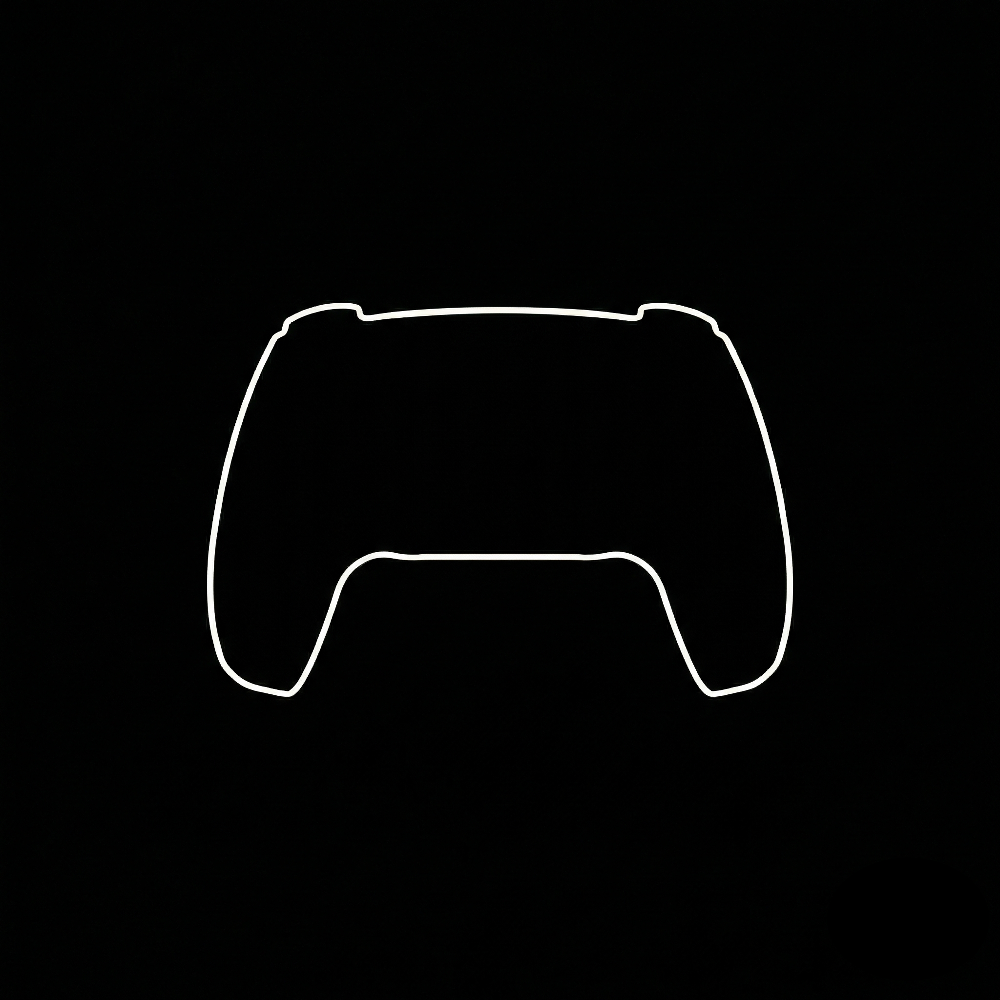
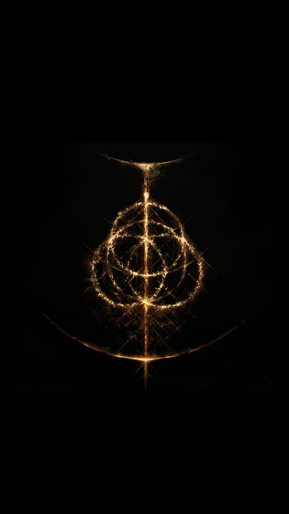

Flow Bedrock¶
This note documents a small ODE-based simulator I built to develop intuition for flow models (continuous normalizing flows / flow matching) and their relationship to diffusion models (typically defined via SDEs), with this update adding conditional control and 3D probability transport.
In deterministic mode, the simulator evolves particles under a time-dependent velocity field by numerically integrating an ODE. Each particle has a position \(X_t\in\mathbb{R}^d\), where \(d=2\) for the 2D demos and \(d=3\) for the 3D demos. Learned sampling runs from noise at \(t=0\) to the target at \(t=1\):
The velocity field can be specified by hand or learned from data. In the conditional demo, the learned field also takes a control label \(c\) as input, so the velocity becomes \(v_\theta(X_t,t,c)\). The label is held fixed throughout each sampling run.
The analytic ring can continue beyond \(t=1\). The stochastic mode adds Brownian motion and a score correction to the learned flow, as described in Section 1.3.
It is primarily a visualization tool: trajectories and particle clouds make the abstract objects in the math (vector fields, marginal distributions, and couplings between source and target distributions) easier to reason about.
- Particles as data samples. In the simulator, each particle is one sample \(x\in\mathbb{R}^d\). In a larger generative model, a sample may represent an image, an audio segment, a motion sequence, or another object encoded as numerical data or a latent representation. Diffusion and flow models are not limited to images. The animation shows the evolution of a population of samples; a visible particle is not a pixel or a semantic part of a generated object.
- Toy shapes as structured distributions. The 2D examples are an analytic ring, a learned PS5-like outline, and a learned Golden Ring pattern. Their point clouds concentrate around geometric structures with nonzero width. The Golden Ring pattern includes overlapping rings and image-derived texture, giving it more structure than a single smooth one-dimensional manifold. In 3D, the sampled targets likewise have nonzero thickness around spatial structures. In the learned examples, the model fits a probability distribution, including how mass is distributed around these shapes.
- Analogy to real data. High-dimensional data can exhibit structure and correlations that concentrate probability mass near lower-dimensional subsets. This is a useful modeling perspective, not an assumption required by flow matching. Training learns a velocity field (or, in diffusion, a score or denoiser) from the data distribution. A finite-time ODE flow with a smooth flow map and smooth inverse preserves absolute continuity and cannot map a full-dimensional source density exactly onto a strictly lower-dimensional set; finite-thickness targets avoid implying such an exact collapse.
- Conditional generation as control. Conditional models learn a distribution \(p_{\mathrm{data}}(x\mid c)\). In this demo, a ring label specifies a target conditional distribution and enters the learned velocity field during integration; it is not a filter applied to the completed particle cloud. Text-conditioned models use a representation of a prompt as the condition, while other applications may use class labels or other information. The shared mechanism is that the condition changes the generation dynamics. The demo's discrete ring labels illustrate this mechanism without implementing language understanding, and extending the state from 2D to 3D leaves the ODE formulation unchanged.
What is on the screen?¶
Each visible point is one sample \(X_t\in\mathbb{R}^d\), with \(d=2\) or \(d=3\). The complete particle cloud is a finite empirical approximation to a probability distribution at time \(t\).
The recorded 2D demos use:
| Control | Value | Meaning |
|---|---|---|
n_sim |
100,000 | particles advanced by the backend |
n_vis |
10,000 | particles sampled and sent to the browser |
dt |
0.01 | simulated time advanced per backend update |
steps |
2 | numerical substeps per update |
h |
0.005 | substep size, \(h=\texttt{dt}/\texttt{steps}\) |
hz |
15 | requested backend update rate |
The backend evolves all 100,000 particles on an NVIDIA RTX 5090. Only 10,000
particles are streamed to the browser. The stream number in the HUD is the
measured backend broadcast rate; it is not the browser's rendering FPS.
The optional density layer is computed from the displayed subsample. It is a binned, log-scaled visualization, not an exact normalized density.
1. Flow Matching¶
1.1 Hand-Crafted Velocity Field: Ring¶
The first stage uses an analytic vector field. No neural network or checkpoint is involved.
For \(x=(x_1,x_2)\in\mathbb{R}^2\), define
The implemented ring field is
The first term is radial negative feedback. For nonzero points inside the target radius, it pushes particles outward; outside that radius, it pulls them inward. The origin remains fixed. The second term is tangent to circles centered at the origin, so it rotates particles.
The simulator solves the ordinary differential equation
For a fixed time \(t\), the ideal circle
is a smooth one-dimensional manifold embedded in \(\mathbb{R}^2\). This makes the ring a useful geometric baseline: its ideal shape is simpler than a textured outline or a pattern of intersecting rings.
Along a particle trajectory, write \(r_t=\lVert X_t\rVert_2\). Whenever \(r_t\ge10^{-4}\), the ODE implies
The field attracts particles toward the target radius, but does not bring the entire cloud exactly onto it in a finite run. Since the target radius changes with time, particles also show a tracking lag: at \(r_t=r_\star(t)\), their instantaneous radial velocity is zero even while the target circle may be expanding or shrinking. The animation shows a distribution with radial spread around the ideal circle. A smooth, invertible ODE flow cannot collapse a full-dimensional Gaussian distribution exactly onto a one-dimensional circle in finite time.
The video uses RK4 to integrate this hand-designed field, showing radial attraction together with tangential rotation.
1.2 Learned Velocity Field: A PS5-Like Outline¶
The ring example writes geometric rules directly into a velocity field. For the PS5-like controller outline, we instead learn a field \(v_\theta:\mathbb{R}^2\times[0,1]\to\mathbb{R}^2\) from target samples.
The target is a distribution of two-dimensional coordinates representing a controller outline. The PS5 checkpoint uses a preprocessed point set derived from the outline; the sampler centers and scales these coordinates, then draws target points with Gaussian jitter. The image below shows the reference shape:

This reference outline illustrates the target geometry. Preprocessing produces a point set, and sampling defines the probability distribution around it. The picture alone does not specify how probability mass is assigned to the coordinates.
The velocity network receives only a point and a time, and predicts a two-dimensional velocity. The PS5 checkpoint uses an MLP with four hidden layers of width 256 and SiLU activations, taking three scalars \((x_1,x_2,t)\) as input and returning two velocity components. The mask and its preprocessing settings are not network inputs.
The visible point cloud forms a recognizable outline, but each point remains one sample in \(\mathbb{R}^2\). With positive Gaussian jitter, the target has a two-dimensional density concentrated near the sampled outline. With zero jitter and a finite set of base coordinates, the sampler instead defines a discrete target law. This example learns coordinate statistics, rather than generating pixels or identifying the controller's semantic parts.
Training: Construct a Path and Regress Its Velocity¶
Sample the source endpoint, target endpoint, and time independently:
For a sampled endpoint pair, define the training path
The endpoints make the supervision easy to compute: the velocity along this particular straight path is simply their displacement. Training minimizes
The expectation is over all three independent draws. Assuming finite second moments, the population-optimal predictor is
for each fixed \(t\), up to sets of zero probability under the law of \(Y_t\). Squared-error regression returns this conditional mean because its error decomposes into the predictor's squared distance from the conditional mean and a residual variance independent of the predictor.
The endpoint pair is used to construct a training example; it is not supplied to the network. Many pairs can produce intermediate states near the same location and time, so the learned field averages their displacement information. Consequently, the straight training paths do not force generated trajectories to be straight.
The following snippet shows one training step. base_points is a tensor of shape [M, 2] with \(M\ge1\), already centered and scaled; jitter_std is the positive standard deviation used by the target sampler. The model, tensors, and optimizer state use the same device:
# Draw independent source and target samples.
x0 = torch.randn(batch_size, 2, device=device)
idx = torch.randint(base_points.shape[0], (batch_size,), device=device)
x1 = base_points[idx]
x1 = x1 + jitter_std * torch.randn_like(x1)
# Build one intermediate state and its target velocity per pair.
t = torch.rand(batch_size, 1, device=device)
yt = (1.0 - t) * x0 + t * x1
target_velocity = x1 - x0
predicted_velocity = model(yt, t)
loss = (predicted_velocity - target_velocity).square().sum(dim=1).mean()
optimizer.zero_grad(set_to_none=True)
loss.backward()
optimizer.step()
The loss above matches the squared Euclidean norm in the formula. The implementation uses nn.MSELoss(), which averages over both samples and the two output coordinates, giving half this value. This constant factor leaves the population minimizer unchanged.
Generation: Integrate the Frozen Field¶
After training, freeze the network and draw fresh Gaussian samples. Generation solves
Here \(Y_t\) denotes the constructed training interpolant, while \(\widehat{X}_t\) denotes a trajectory obtained by integrating the learned field. No target endpoint is assigned to a generated particle, and no parameter update takes place during sampling. Unlike the continuously running analytic ring, this learned demo uses the checkpoint's time interval and stops at \(t=1\).
Loading the checkpoint reconstructs the network and restores its weights. Sampling then runs with the model in evaluation mode and gradients disabled. At each RK4 substep, the solver queries the frozen network at several intermediate positions and times; it does not interpolate each particle toward a stored target point. Time advances through \([0,1]\) and stops at the endpoint.
The PS5 recording uses deterministic ODE sampling with RK4 and zero diffusion amplitude. With the initial seed and numerical settings fixed, replay compares the same initial samples under the same learned field. The final cloud approximates the training distribution; finite model capacity, optimization error, numerical integration, and finite sample size all limit agreement. A recognizable silhouette alone does not establish that the probability mass within the silhouette is correct.
This video records the live particle canvas at 30 fps using the browser's captureStream and MediaRecorder APIs. It includes a parameter label drawn for the recording; the control panel and hardware HUD are separate page elements and are not captured. The particle positions come from the running backend simulation. The clip shows the Gaussian start, the learned transport, and a pause at the final outline.
1.3 Stochastic Paths with the Same Time Marginals¶
The previous PS5 example transports Gaussian samples with a deterministic ODE. We now add random motion while aiming to retain the same evolving distributions. The cloud still develops into the controller outline, but individual samples follow noisy paths. This lets us compare deterministic and stochastic probability transport using the same target geometry.
Add Noise and Compensate for Its Effect¶
Let \(p_t(x)\) be the density of the training interpolant \(Y_t=(1-t)X_0+tX_1\), with \(x\in\mathbb{R}^2\) and \(t\in[0,1]\). The velocity network approximates a field transporting this path; a second network estimates the score of the same path,
For a deterministic scalar diffusion schedule \(g(t)\) that depends only on time, the demo integrates the Itô SDE
Here \(Z_t\in\mathbb{R}^2\) denotes the stochastic sample, and \(W_t\) is standard Brownian motion in \(\mathbb{R}^2\), independent of \(Z_0\). Adding noise alone would change the density evolution. The positive score correction is chosen to compensate for that diffusion at the level of one-time distributions.
To see the cancellation, replace the learned fields by exact \(v_t\) and \(s_t=\nabla_x\log p_t\), where \(v_t\) satisfies the continuity equation for \(p_t\). With sufficiently smooth positive densities, suitable decay at infinity, and well-posed dynamics, the Fokker–Planck equation gives
The extra terms cancel because \((\nabla\log p_t)p_t=\nabla p_t\) and \(g\) is independent of position. Starting from the same source law, the exact ODE and this SDE therefore share the same density at every time. Their individual trajectories and path-space laws remain different. The endpoint distribution is the final member of this family of time marginals.
Learn the Score of the Entire Path¶
The required score belongs to the evolving path, rather than only its endpoint. Because \(X_0\) is standard Gaussian and independent of \(X_1\),
Averaging the conditional score given \(Y_t=y\) yields the marginal score \(s_t(y)\). The path-score network uses the weighted regression objective
with \(T\) independent of both endpoints. The interval excludes the singular conditional-score limit at \(t=1\).
The Recorded Stochastic Demo¶
The comparison video uses the same PS5 velocity checkpoint, seed 42, initial samples, and visible sample indices in both runs. Each run advances 100,000 samples and displays 10,000 of them. Three samples are highlighted in matching colours, with polylines joining their actual streamed positions. Their paths make the difference visible even when the overall clouds look similar.
The left panel uses the deterministic ODE with Euler integration. The right panel adds the path-score correction and random increments, using Euler–Maruyama and the diffusion amplitude
The larger noise amplitude makes the path differences easier to inspect and decreases to zero as sampling progresses. Both panels use the same internal step size \(h=0.005\). Euler also handles the right panel's final deterministic interval. This comparison keeps the drift discretization consistent; the earlier standalone ODE video in Section 1.2 uses RK4. During the stochastic interval, let \(Z_k\) be the numerical state at time \(t_k\). For a step of length \(h>0\), Euler–Maruyama uses
where the Gaussian increments are independent across steps and particles. The \(\sqrt{h}\) factor is essential: Brownian increments have covariance \(hI_2\).
Watch the coloured paths: the ODE paths vary smoothly, while the SDE paths show irregular turns and backtracking. Both clouds still approach the controller outline. The video combines two live canvas recordings; the labels report each run's numerical settings and simulation time. The coloured trails are a visualization of sampled trajectories, rather than additional forces or noise added during editing.
Both the learned fields and the numerical integration are approximate. Increasing \(g_{\mathrm{peak}}\) also amplifies the contribution of score error through the factor \(g^2/2\). The checkpoint metadata contains inconsistent jitter values, so this recording is a qualitative demonstration rather than a verification of exact marginal equality or an exactly matched training distribution.
2. Golden Ring: Conditional Control¶
The PS5 example learns one target distribution. Golden Ring adds a new question: can one velocity network generate different parts of a structured target when we change a control label?
The complete target contains three overlapping rings, a vertical structure, and fine image-derived texture. We first sample coordinates from the full image, then define three additional target distributions using ring-shaped selection masks. One network learns all four branches: the full target, the central ring, the left-tilted ring, and the right-tilted ring.
2.1 From a Coloured Image to a Target Distribution¶

The image supplies sampling weights rather than network inputs. For pixel \(i\) in the finite image index set \(\mathcal{I}\), let \(b_i\in[0,1]^3\) be its RGB vector and define the intensity heuristic
The implementation weights pixels by intensity and similarity to a chosen gold colour:
where \(b_\star=(214,164,95)/255\), corresponding to #d6a45f. The checkpoint uses \(\tau=0.02\), \(\gamma_\ell=1\), and \(\sigma_{\mathrm{col}}=0.35\). Bright pixels near this colour receive larger sampling weights. These operations use the stored RGB values as a sampling heuristic, rather than estimating physical radiance.
Let \(a_i\in\mathbb{R}^2\) be the resulting pixel coordinates after an isotropic spatial scaling, a shared centering step, and the final target normalization. The isotropic scaling preserves the image's aspect ratio. A target sample is a selected coordinate plus isotropic Gaussian jitter with standard deviation \(\delta=0.01\). The network learns the resulting coordinate distribution; it sees neither the source image nor its RGB values.
This first clip uses the full-target branch and shows Gaussian samples developing into the complete pattern. The target has thickness, intersections, and texture. Its geometry is more complex than a single smooth one-dimensional manifold.
2.2 Four Target Laws in One Coordinate System¶
Write the control token as \(C\in\{0,1,2,3\}\):
| Token | Demo label | Target used for training |
|---|---|---|
| \(0\) | Full distribution | all pixels with positive full-image sampling weight |
| \(1\) | R1: central ring | full-image weights restricted by the central-ring mask |
| \(2\) | R2: left-tilted ring | full-image weights restricted by the left-ring mask |
| \(3\) | R3: right-tilted ring | full-image weights restricted by the right-ring mask |
Let \(m_{i,c}\in\{0,1\}\) indicate whether pixel \(i\) belongs to the selection mask for token \(c\), with \(m_{i,0}=1\). The normalized pixel probabilities are
assuming each denominator is positive. With \(J\mid C=c\sim\operatorname{Categorical}(\pi^{(c)})\) and independent \(\varepsilon\sim\mathcal{N}(0,I_2)\), the sampled target is
Here \(\mathcal{N}(x;a_i,\delta^2I_2)\) denotes a Gaussian density evaluated at \(x\). Positive jitter gives each branch a two-dimensional density concentrated near its selected structure, with Gaussian tails extending beyond the mask.
The masks can overlap. They select weighted coordinates before jitter is added, and all branches share the full image's coordinate center and scale. This keeps each ring in its original spatial location. The full target also contains structure outside these masks, so its distribution is separately sampled; it is not assumed to equal a mixture of the three ring distributions.
2.3 Learn a Conditional Velocity Field¶
Training retains the straight interpolant from Section 1.2. Draw \(X_0\sim\mathcal{N}(0,I_2)\) independently of \((C,X_1)\), draw \(X_1\) from the selected target law, and draw \(T\sim\operatorname{Uniform}[0,1]\) independently of all other variables. Define
and minimize
With finite second moments, the population-optimal predictor for each token is
up to sets of zero probability under the corresponding path law. The endpoint pair supplies the regression target. The control label selects the target law and remains an input during generation.
The V5 trainer allocates half of each batch to token \(0\), sampling the full target directly. For the remaining half, it chooses uniformly among the three ring labels. Thus the full-target branch is explicitly trained alongside the conditional branches. The implementation calls token \(0\) the unconditional token; here that means the full-image target, rather than a marginal formed by combining the three ring labels.
The network uses six hidden layers of width 768 with SiLU activations, four Fourier frequencies per spatial coordinate, and a learned 16-dimensional token embedding. Its input combines position, time, spatial Fourier features, and the token embedding; its output remains a two-dimensional velocity.
The following code shows the regression step for one chosen token. base_points has shape [M, 2] and contains the shared centered and scaled coordinates; weights has shape [M], and masks has shape [3, M]. Each masked weight sum is positive. All tensors and the model use the same device, and c is an integer in 0..3. The full trainer mixes these groups within each batch:
# Define the target law for this token, then sample coordinates.
q = weights if c == 0 else weights * masks[c - 1]
q = q / q.sum()
idx = torch.multinomial(q, batch_size, replacement=True)
x1 = base_points[idx] + 0.01 * torch.randn(batch_size, 2, device=device)
# Source samples and time are independent of the target draw.
x0 = torch.randn_like(x1)
t = torch.rand(batch_size, 1, device=device)
yt = (1.0 - t) * x0 + t * x1
control = torch.full((batch_size,), c, dtype=torch.long, device=device)
predicted_velocity = model(yt, t, control)
loss = torch.nn.functional.mse_loss(predicted_velocity, x1 - x0)
optimizer.zero_grad(set_to_none=True)
loss.backward()
optimizer.step()
As in Section 1.2, mse_loss gives half the squared-norm batch average because it also averages over the two output coordinates.
2.4 The Label Changes the Entire Flow¶
To generate samples for a fixed token \(c\), freeze the network and solve
The mask has already served its purpose in preparing training samples. At inference, the ring label enters every velocity evaluation, including RK4's intermediate stages. Every sample is transported under the selected field; particles are not deleted or filtered after generating the full pattern.
The comparison clip reuses the same seed, initial Gaussian cloud, visible sample indices, camera, and integration settings. It runs R1, R2, and R3 from \(t=0\) in turn. The changing trajectories and endpoint shapes therefore reflect the label-dependent field, rather than a different initialization or a separately loaded model.
Both clips use deterministic ODE sampling, RK4 with internal step size \(h=0.005\), 100,000 simulated samples, 10,000 displayed samples, and seed 42. Each run reaches \(t=1\) before its final frame is held for inspection. The recordings capture the live canvas with an added label showing which branch is active. Agreement with the target distribution remains approximate because the field is learned and sampling is numerical.
2.5 What the CFG Scale Means¶
The full-target branch also supplies the baseline for classifier-free guidance. To keep it distinct from the score notation in Section 1.3, write the guidance scale as \(\lambda\ge0\). For \(c\in\{1,2,3\}\), the implemented field is
At \(\lambda=0\) this is the full-target field; at \(\lambda=1\) it is the learned conditional field. Values above one extrapolate in the direction of the conditional-minus-full velocity. They can strengthen the visual condition, but do not guarantee a more accurate target distribution. The recorded comparisons fix \(\lambda=1\) throughout.
These labels are discrete geometric conditions. They demonstrate how a shared network changes its transport field when given a condition. A richer conditioning system could supply a learned representation of text or other information, while retaining the same conditional ODE structure.
3. Probability Transport in 3D¶
The 3D demos keep the same flow-matching construction and change the ambient space from \(\mathbb{R}^2\) to \(\mathbb{R}^3\). Each sample now has three coordinates, and the network predicts three velocity components. A rendered frame is a perspective projection of those samples; rotating the camera reveals the depth that a single projection can hide.
3.1 The Same Objective in Three Coordinates¶
For each target, independently sample \(X_0\sim\mathcal{N}(0,I_3)\) and \(X_1\sim p_{\mathrm{data}}\), with \(T\sim\operatorname{Uniform}[0,1]\) independent of both. Define \(Y_t=(1-t)X_0+tX_1\) for \(t\in[0,1]\). The training objective is
As in Section 1.2, squared-error regression has the population optimum \(v^*(x,t)=\mathbb{E}[X_1-X_0\mid Y_t=x]\), defined almost everywhere under the interpolant distribution. The training segment \(Y_t\) supplies a velocity target; generated trajectories follow the learned field instead:
These demos use three separately trained networks, one for each target. Unlike Golden Ring's conditional branches, switching the 3D target loads a different checkpoint. Each network is an MLP with five hidden layers of width 512 and SiLU activations. Its input is \((x_1,x_2,x_3,t)\) and its output is a vector in \(\mathbb{R}^3\). Trefoil was trained for 15,000 steps; Swiss Roll and Double Helix for 10,000 each, all with batch size 32,768, learning rate \(2\times10^{-4}\), and training seed 42.
The training step has the same structure as the 2D example:
# One 3D target sampler and one velocity network per experiment.
source = torch.randn(batch_size, 3, device=device)
target = sample_target(batch_size, device=device) # shape: (B, 3)
time = torch.rand(batch_size, 1, device=device)
interpolant = (1.0 - time) * source + time * target
prediction = model(interpolant, time)
loss = (prediction - (target - source)).square().sum(dim=1).mean()
optimizer.zero_grad(set_to_none=True)
loss.backward()
optimizer.step()
This snippet implements the squared vector norm exactly. The trainer uses elementwise mean squared error, which is \(\mathcal{L}_{\mathrm{3D}}/3\) in three dimensions and has the same population minimizer.
3.2 Trefoil: A Tube Around a Knotted Curve¶
The Trefoil centerline is the closed curve
The sampler distributes centerline positions approximately uniformly in arc length. In the continuum, this corresponds to a parameter density proportional to \(\lVert\gamma'_{\mathrm{tr}}(\phi)\rVert_2\). The implementation inverts a cumulative chord-length table with 16,384 intervals.
At each sampled position, let \(n_1(\phi),n_2(\phi)\) be an orthonormal basis perpendicular to the unit tangent. With \(Q\sim\operatorname{Uniform}[0,1]\) and \(A\sim\operatorname{Uniform}[0,2\pi)\) independent of each other and of \(\Phi\), the target sample is
The square root makes each cross-section uniform in disk area: the radial cumulative distribution is \(\Pr(R\le r)=(r/0.14)^2\) for \(0\le r\le0.14\). The target is a solid tube around a one-dimensional centerline. Arc-length sampling and uniform disks define its probability law; curvature means this construction is not exactly uniform in ambient tube volume.
The rotating endpoint view exposes the over-and-under arrangement of the knot. An apparent crossing in one image is a crossing of projected points, rather than an intersection of the centerline in three dimensions.
3.3 Swiss Roll: A Thickened Surface¶
The Swiss Roll mid-surface is
Its area element is \(a\sqrt{1+u^2}\,\mathrm{d}u\,\mathrm{d}y\). Accordingly, the sampler draws \(U\) with density proportional to \(\sqrt{1+u^2}\) on the stated interval and draws \(H\sim\operatorname{Uniform}[-1.35,1.35]\) independently. The cumulative distribution of \(U\) is numerically inverted using the primitive
Writing \(x(u)=au\cos u\) and \(z(u)=au\sin u\), choose the unit normal
An independent signed offset \(B\sim\operatorname{Uniform}[-0.07,0.07]\) gives \(X_1=F(U,H)+B\,n(U)\). The mid-surface is two-dimensional and has boundary; the sampled target is a three-dimensional slab of total normal thickness \(0.14\). The mid-surface sampling is area-balanced, while the normal-offset construction specifies the slab density without claiming uniform ambient volume.
The camera rotation makes the separate turns and their gaps visible. Points on different turns can overlap in a projection while remaining separated in space.
3.4 Double Helix: Two Thick Strands¶
For an arm index \(j\in\{0,1\}\), define
The sampler chooses each arm with probability \(1/2\) and draws \(\Phi\sim\operatorname{Uniform}[0,4\pi]\) independently. Each arm makes two turns and has constant centerline speed, so uniform \(\Phi\) also gives uniform centerline arc length. The endpoints lie at heights \(-1.8\) and \(1.8\).
The same normal-disk construction adds a cross-section of radius \(0.13\), followed by independent isotropic Gaussian noise with standard deviation \(0.015\):
Here the normal vectors are orthonormal and perpendicular to the corresponding arm's tangent; \(Q,A,\varepsilon\) are independent of each other and of \((J,\Phi)\). The Gaussian term gives the target density nonzero tails outside the two compact tubes. This example models a geometric point distribution; it carries no molecular dynamics or interaction law.
3.5 What the Recordings Demonstrate¶
All three clips start from the same seeded Gaussian samples and visible indices, use deterministic RK4 sampling with \(h=0.005\), and evolve 100,000 samples while displaying 10,000. The camera is fixed during transport from \(t=0\) to \(t=1\). Once transport finishes, the sample coordinates remain fixed and the camera rotates for six seconds. The caption identifies this change, so viewing motion is distinguishable from probability transport.
The ideal centerlines and mid-surface have lower intrinsic dimension, while the training targets have finite thickness in \(\mathbb{R}^3\). This distinction matters for the ODE interpretation. A sufficiently regular velocity field with a globally defined invertible flow transports an absolutely continuous source to another absolutely continuous distribution; it cannot collapse that source exactly onto a curve or surface in finite time. Moreover, such a flow preserves full support, so the compact Trefoil and Swiss Roll targets can only be approximated by these regular learned flows at the endpoint. Their visible shapes show concentration near the intended geometry, with finite model and integration error.
The 3D extension therefore changes the sample space and target geometry while preserving the flow-matching objective. Camera rotation helps inspect spatial structure; quantitative distributional accuracy would require separate evaluation beyond these visual demonstrations.